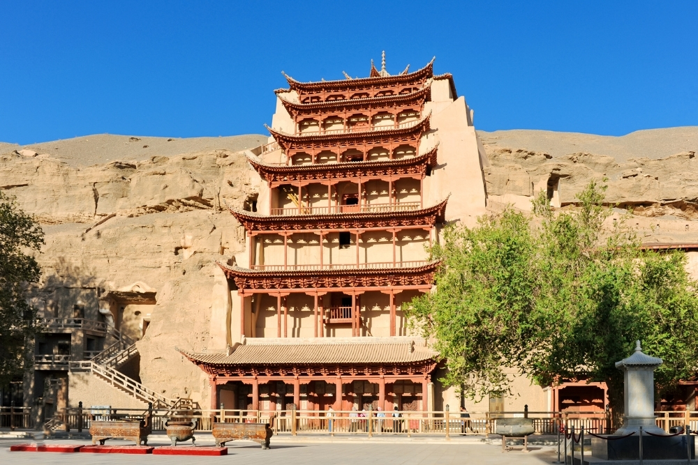
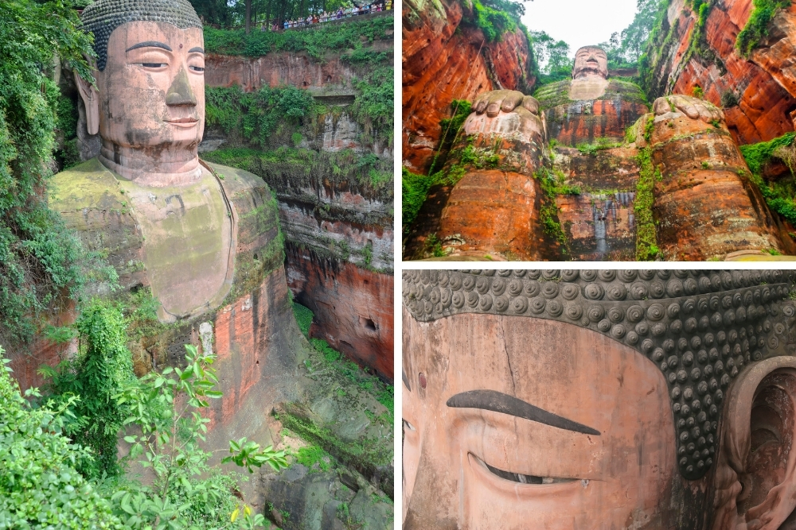
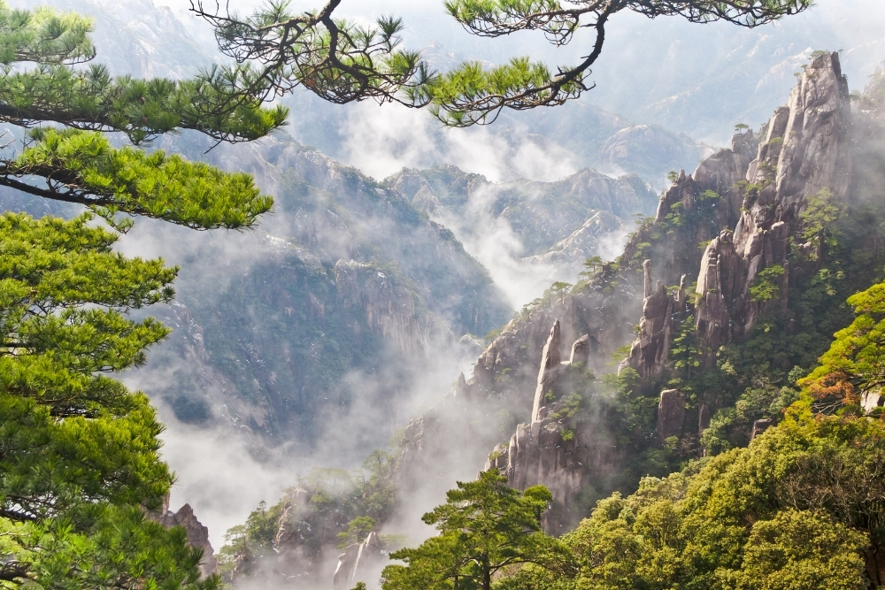

Pudong SkylinePudong este un cartier din Shanghai, aflat pe malul estic al raului Huangpu, care s-a dezvoltat drept centru financiar si comercial al Chinei. Orizontul este strajuit aici de zgarie nori mareti, care au aparut pe locul unde acum 20 de ani existau in majoritate numai terenuri agricole. Printte constructiile gigantice se numara Turnul Perla Orientului, Centrul Financiar, cladirea Jin Mao si Turnul Shanghai care va fi terminat in anul 2014.
|
|
|  |
Grotele MogaoGrotele Mogao reprezinta un sistem de 492 de temple, aflat la 25 de kilometri sud-est de centrul orasului Dunhuang, o oaza strategica situata la intersectia cu Drumul Matasii. Grotele contin exemple dintre cele mai reprezentative ale artei budiste, care se intind pe o perioada de aproximativ 1000 de ani. Constructia grotelor budiste a inceput in anul 366 e.n., ele fiind initial locuri pentru a depozita manuscrise si opere de arta. Impreuna cu grotele Longmen si Yungang, Mogao sunt unele dintre cele mai faimoase trei temple stravechi, sapate in stanca, din China. |
Statuia Leshan BuddhaBuddha din Leshan este o statuie gigantica a lui Buddha, sapata in stanca, in Sichuan, in vestul Chinei. Inceputa in anul 713, in timpul Dinastiei Tang, statuia nu a fost terminata pana in anul 803 si a avut nevoie de eforturile reunite a mii de sculptori si muncitori. Statuia se ridica la o inaltime de 71 de metri si are degete lungi de trei metri, la fiecare dintre mainile sale enorme. |
 |
|  |
Muntele HuangUna dintre destinatiile turistice importante din China, Muntele Huang, este un versant aflat in estul Chinei, cunoscut si sub numele de Huangshan (“Muntele Galben”). Zona este vestita pentru peisajele de aici, padurile de pini, varfurile de stanca de granit si panorama care se poate vedea de sus. In vremuri stravechi, peste 60000 de trepte din piatra au fost sapate in munte. In prezent, exista telecabine pe care turistii le pot lua pentru a urca de la baza muntelui pana in varf. |